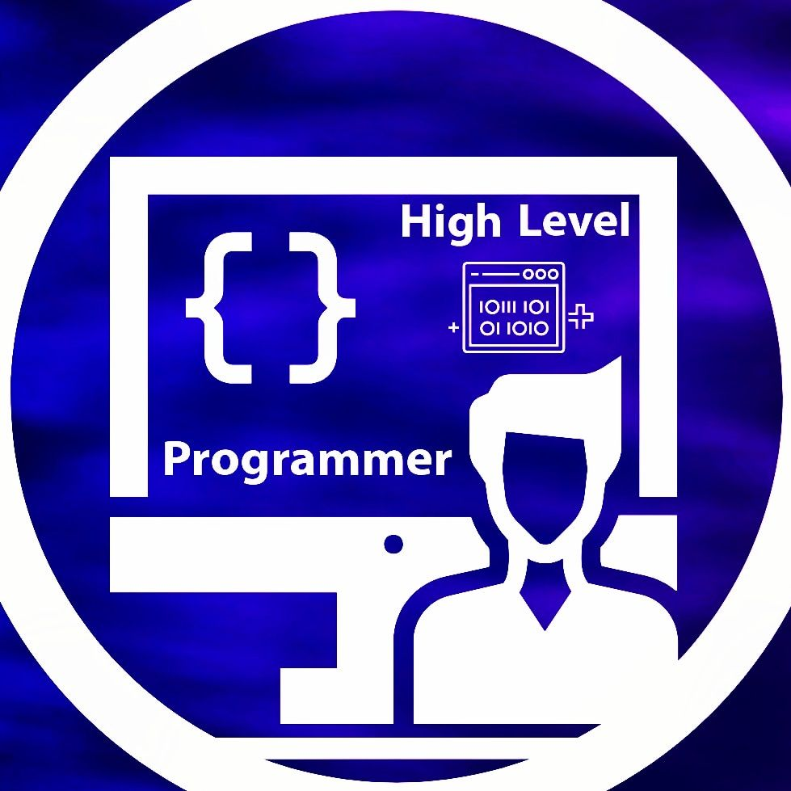

High Level Programmer
Created by Alin Ionut Toader
Welcome to the High Level Programmer Page. We are happy to make you part of our team and we also hope you'll enjoy your experience here. We believe in the importance of developing a strong coding team because creating a team is crucial for achieving success in any organization or project. A team brings together individuals with different skills, perspectives, and strengths, allowing them to collaborate and work towards a common goal. By combining their strengths and skills, a team can accomplish tasks that would be impossible for any individual to achieve alone. Additionally, working in a team fosters a sense of accountability, promotes creative thinking, and allows for the sharing of knowledge and ideas. A well-functioning team also provides a supportive and collaborative work environment, which can boost morale, increase motivation, and ultimately lead to higher productivity and better outcomes. Whether it's in a business, sports team, or any other type of organization, creating a team is essential for achieving success and reaching one's goals.
THIS IS THE BETA VERISON OF OUR WEBSITE ! THE FULL WEBSITE WILL BE RELEASED SOON.
About Us
It is an absolute pleasure to be here today. I am honored to speak about someone who is truly inspiring, ambitious and determined to make a difference in the world of programming. This individual is none other than Alin Ionut Toader.
At a young age, Alin has already shown immense potential and dedication towards programming. With a passion for coding and a desire to help others, Alin has decided to take on the challenge of creating a website for programmers.
This website will not only provide a platform for programmers to connect, but it will also serve as a valuable resource for individuals who are just starting out in the world of programming. Alin's commitment to helping others is truly commendable, and it is evident that this project is driven by a desire to make a positive impact on the programming community.
But Alin is not working alone. He has gathered a team of talented and like-minded individuals who share his vision and are equally dedicated to making this project a success. This team will undoubtedly bring a range of skills and expertise to the table, allowing for a collaborative effort that will result in a website that is both user-friendly and informative.
As an ambitious teenager, Alin has already shown an incredible level of leadership and maturity. He has taken on a challenge that many people twice his age would shy away from, and he is determined to see it through to the end. Alin's dedication and perseverance are a true inspiration, not only to fellow teenagers but to people of all ages.
In conclusion, Alin is an exceptional individual who is making a difference in the world of programming. With his unwavering commitment and a talented team by his side, I have no doubt that his website will become an invaluable resource for programmers around the world. Let us all support Alin Ionut Toader in his mission to make a positive impact on the programming community. Thank you.